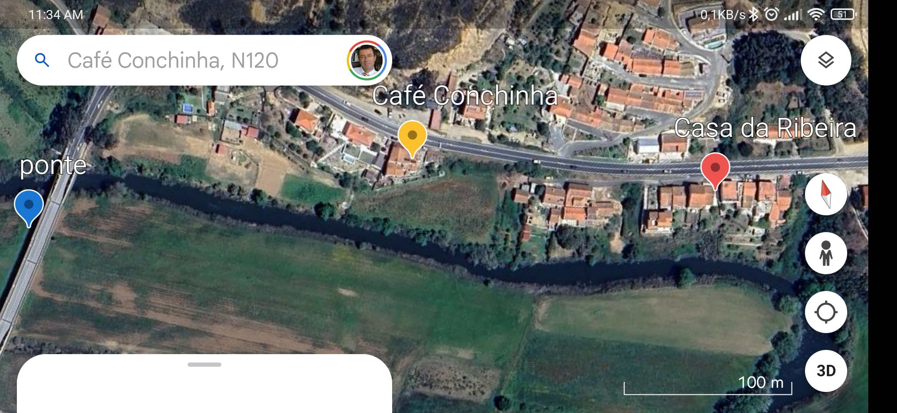
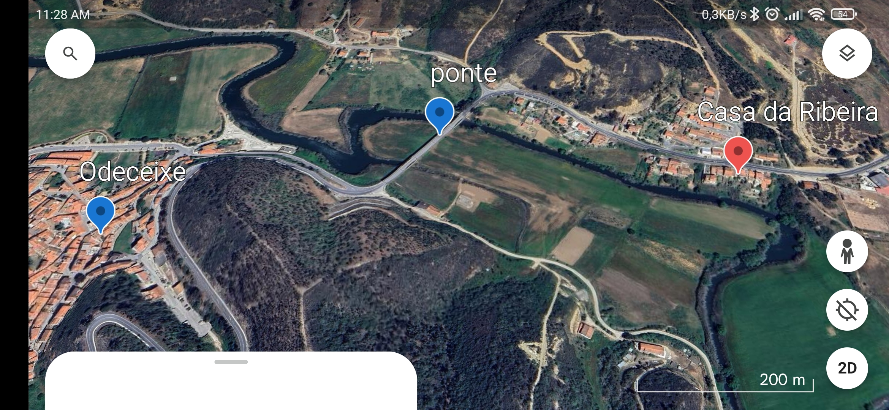
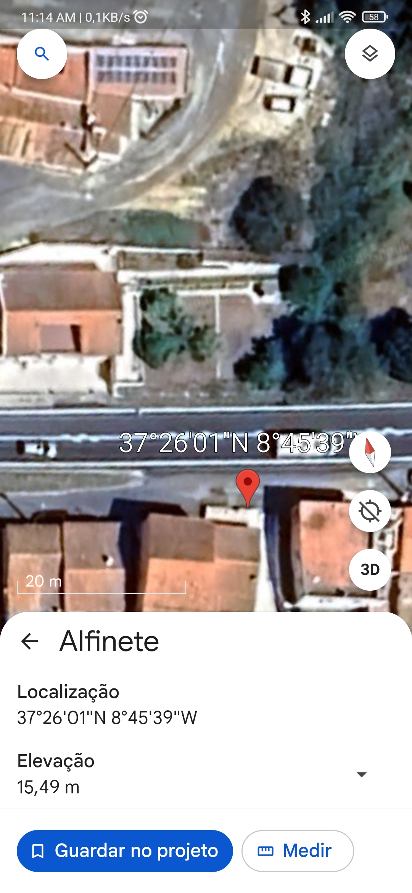

Localização
A Casa da Ribeira está situada na estrada nacional 120, nº24, próxima do café Conchinha, em Baiona, à entrada de Odeceixe.
Estamos localizados em uma região privilegiada, rodeada pela natureza e com fácil acesso a pontos turísticos locais. Confira abaixo algumas imagens da nossa localização.


